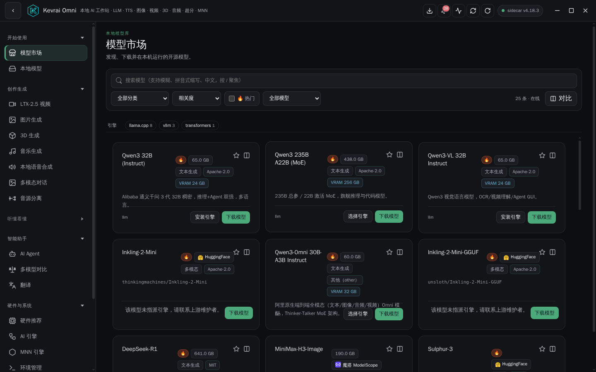
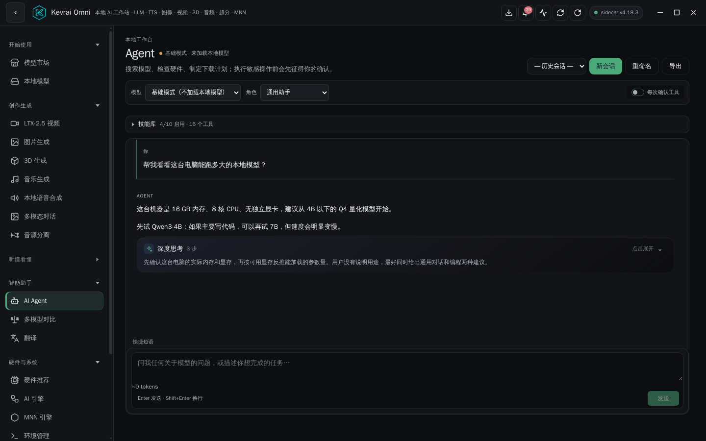
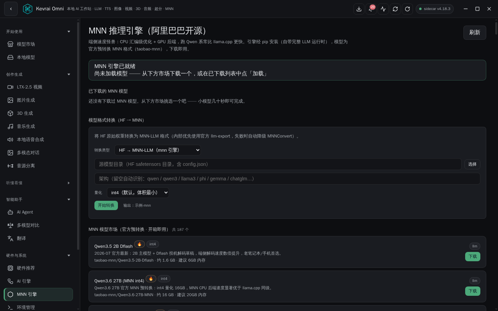

REAL SCREENS · 4.18.3
界面截屏
全部取自 Kevrai Omni 4.18.3 的实际运行窗口，保留完整应用边框、侧边栏与版本信息。点击任意图片可查看原始尺寸。

模型市场
25 个在线模型快照。按任务、引擎与量化筛选；每张卡片显示体积、推荐引擎和运行内存。

Agent 深度思考
推理、工具调用与参数显示在同一张卡里。默认收起，点击可展开完整过程。

MNN 推理引擎
引擎独立安装；187 个官方预转换模型按需下载，也支持 HF → MNN 格式转换。

AI 引擎管理
llama.cpp、vLLM、MNN、ONNX Runtime、ComfyUI 等引擎在一个页面里安装和检查更新。